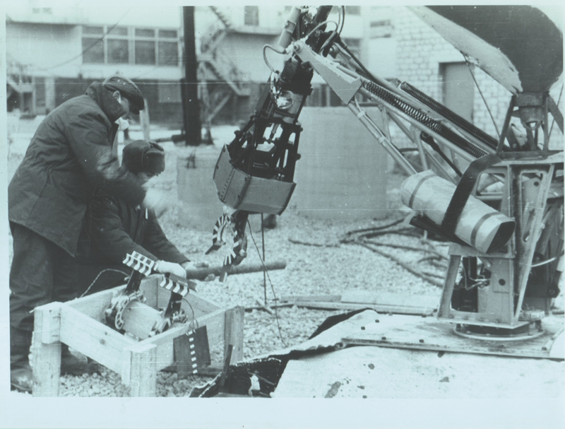

ЧЕРНОБЫЛЬСКАЯ АЭС / 1987
Мобот-Ч-ХВ-2
Мобильный робот для дистанционной работы на кровле третьего энергоблока.
3D-МОДЕЛЬ
Подготовка модели…
Вращайте модель мышью или пальцем

↗Мобильный робот для дистанционной работы на кровле третьего энергоблока.

↗